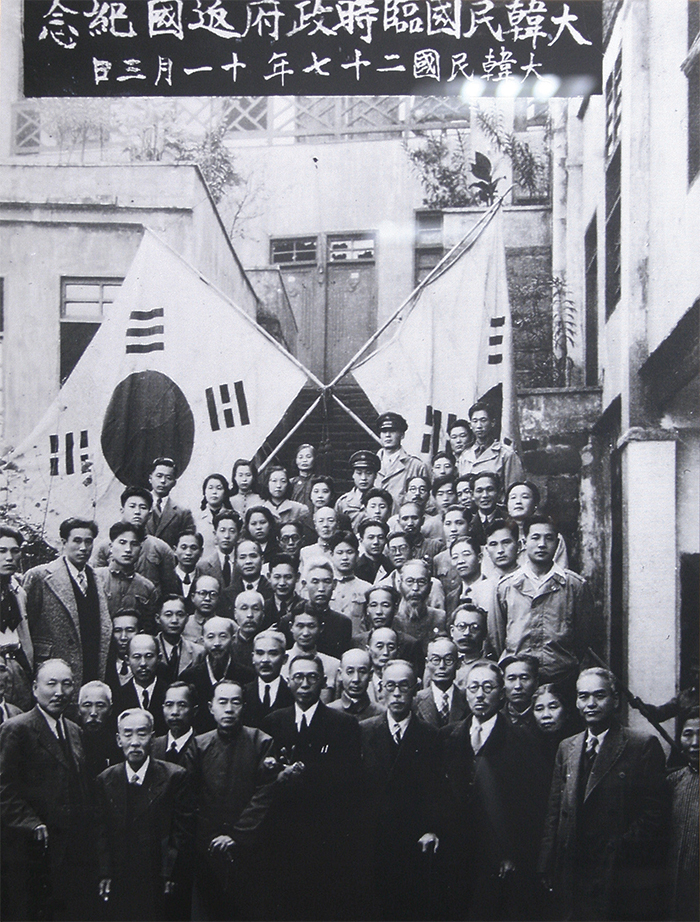
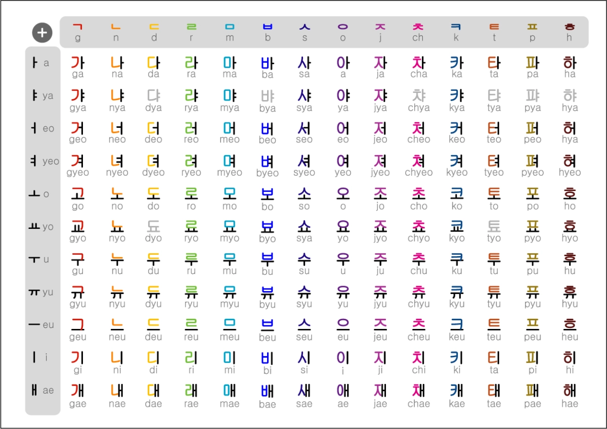
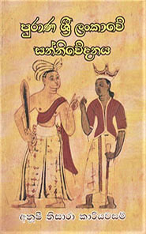

ඉතිහාසය, සංස්කෘතිය සහ භාෂාවන් පිළිබඳ ගවේෂණය කරන විද්වතෙක්
මගේ පසුබිම, අධ්යාපනය සහ වෘත්තීය ගමන
වසර අත්දැකීම්
මම අශාන් රත්නායක, ඉතිහාසඥයෙක් සහ කොරියානු භාෂා විශේෂඥයෙක්. මගේ වෘත්තීය ජීවිතය කොරියානු ඉතිහාසය, සංස්කෘතිය සහ භාෂාව පිළිබඳ ගවේෂණය කිරීමට කැපවී ඇත. මම කොරියානු භාෂාව ඉගැන්වීම සහ ඉතිහාසය පිළිබඳ පර්යේෂණ කටයුතු සිදු කරන අතරම, භාෂාමය හා සංස්කෘතික සබඳතා ශක්තිමත් කිරීම සඳහා වැඩ කරමි.
අශාන් රත්නායක
ashan@example.com
+94 77 123 4567
කොළඹ, ශ්රී ලංකාව
මම ඔබට ලබා දිය හැකි සේවා
කොරියානු ඉතිහාසය පිළිබඳ ගැඹුරු පර්යේෂණ සහ විශ්ලේෂණ. විශේෂයෙන්ම ජොසොන් රාජවංශ සමය.
තවත් කියවන්න සියලු මට්ටම් සඳහා කොරියානු භාෂා පන්ති. TOPIK සූදානම් වීම සහ භාෂා පරිවර්තන සේවා.
තවත් කියවන්න කොරියානු සහ ශ්රී ලාංකික සංස්කෘතික සන්නිවේදනය සඳහා උපදේශන සේවා.
තවත් කියවන්න මගේ අලුත්ම පර්යේෂණ සහ ව්යාපෘති
අලුත්ම ලිපි සහ ලේඛන
ඔබගේ පණිවුඩය මට යවන්න
123/4, කොළඹ මාර්ගය, කොළඹ 07, ශ්රී ලංකාව
ashan@example.com
+94 77 123 4567
සඳුදා - සිකුරාදා: 9:00 AM - 5:00 PM